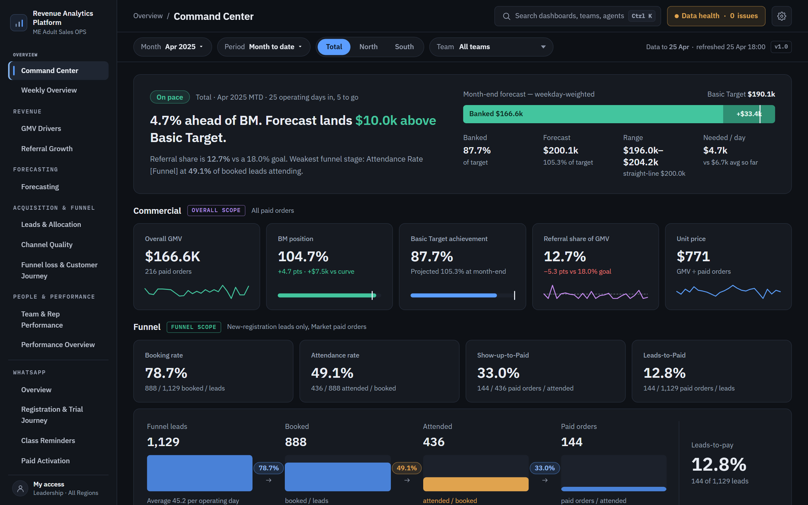

Understand performance. Diagnose gaps. Plan the next move.
One connected daily workflow for operations, leadership and key stakeholders. Revenue, acquisition, conversion, referrals, team performance and WhatsApp, rebuilt every morning in one place.
Every question meant starting again.
Reporting was spread across exports, screenshots and one-off analyses. Understanding performance, investigating a gap or planning a strategy meant repeating the same manual work: pull the data, rebuild the cut, check the calculation rules, fix the output.
The platform brings revenue, acquisition, conversion, referrals, team performance and WhatsApp into one connected daily workflow, so the next question doesn't start from a blank page.
Not faster dashboards. Reusable answers.
The value isn't building reports faster with AI. It's turning business knowledge into parts that run every day, so stakeholders can investigate and plan without asking for a fresh report.
Calculation rules, written once
Metric definitions, cohorts, attribution and timezones are captured as code, so every view calculates the same way every day.
Data arrives on its own
Email attachments, BI exports and SQL extracts are collected automatically each morning.
Checked before anyone sees it
Schema, dates, duplicates and control totals are validated on every run. Stale or broken data doesn't get published.
Forecasts and drill-downs built in
A tested month-end forecast, plus filters that recalculate live from company level down to a single team.
From a gap to a decision.
What it looks like in use: one connected line of questions instead of a tour of separate reports.
Are we on track?
Month-to-date sits at 88% of target: a 12% gap.
What's driving it?
Leads are on plan and order value is steady. Conversion is 0.9 pts below plan.
Where?
Paid social converts 2.1 pts under plan. The other channels hold.
Who?
Within paid social, one team is at 2.1% against a 6.0% plan.
What now?
Focus coaching on that team's paid-social leads. No new report requested.
Illustrative: the path is how the platform is used. The numbers are synthetic.
Every view answers a decision.

Command Center. Are we on pace? A plain-language verdict against target and benchmark, a weekday-weighted month-end forecast with a range, and data health at a glance.
Built before the day starts.
Collect
Email attachments, BI exports and SQL extracts
Validate
22 inputs checked: schema, dates, duplicates, control totals
Build
One governed, reconciled, versioned snapshot
Publish
The platform is regenerated and released
Notify
Stakeholder groups get the link, with no duplicate sends
On failure: the run classifies the cause, alerts the owner with evidence, keeps completed work, and never re-sends something that already went out. If the source data hasn't landed, it skips and says so instead of publishing stale numbers.
How it's built.
Pulls data from the BI platform
Cleans, deduplicates, validates, calculates KPIs and forecasts
Reads the Excel exports the business already produces
Passes prepared data and forecast snapshots between parts
Layout, filters, interactive tables and live recalculation
Interactive charts, trends and heatmaps
Runs the whole pipeline every morning, unattended
Every change versioned, every release tracked
SQL · Excel exports → Python + openpyxl → JSON → HTML · CSS · JS · ECharts
Why it's trusted.
Never average a percentage
Every rate is recomputed from summed numerators and denominators at the level you're looking at, so totals and drill-downs always agree.
Totals add up at every level
Company, region, team and rep reconcile to each other. Records that don't match stay visible, instead of silently disappearing.
One written rule per metric
Cohorts, attribution and timezone conversion are written down before they're built, so the agents implement rules instead of guessing them.
Nothing ships unchecked
Automated tests, real-browser checks and documentation sync, with production changes only through reviewed pull requests.
People actually use it.
8
stakeholders
20
opens
130
page views
~27 h
active use
Owner activity excluded. The official daily dashboard went live about a week after the handover.
How much repeated work does it absorb? Estimate · not measured savings
If all 16 views were recreated from raw exports every day, with the same depth, accuracy and review:
| Approach | Staff-hours / day | / week (5 days) | / month (22 days) |
|---|---|---|---|
| Manual reporting | 39–64 (≈50) | 195–320 (≈250) | 858–1,408 (≈1,100) |
| AI-assisted reporting | 8–16 (≈12) | 40–80 (≈60) | 176–352 (≈264) |
These are equivalent workloads, not hours saved: the team never produced the whole package daily. The manual figure comes from a report-by-report assessment, including shared preparation and review. The AI-assisted figure is an unbenchmarked planning estimate that allows for prompting, verification and corrections. Real net savings would need human oversight and maintenance time measured.
How a rate stays honest at every level JavaScript · simplified
// Never average percentages: re-sum the parts for the current filter. function rate(rows, num, den) { const n = rows.reduce((s, r) => s + r[num], 0); const d = rows.reduce((s, r) => s + r[den], 0); return d ? n / d : null; // null, not 0: "no data" is not "0%" } // The same function serves Total, a region, a team or one rep, // so a drill-down can never disagree with the total above it. const attendRate = rate(filtered, 'attended', 'booked');
A simplified illustration of the rule the platform follows, not production code.